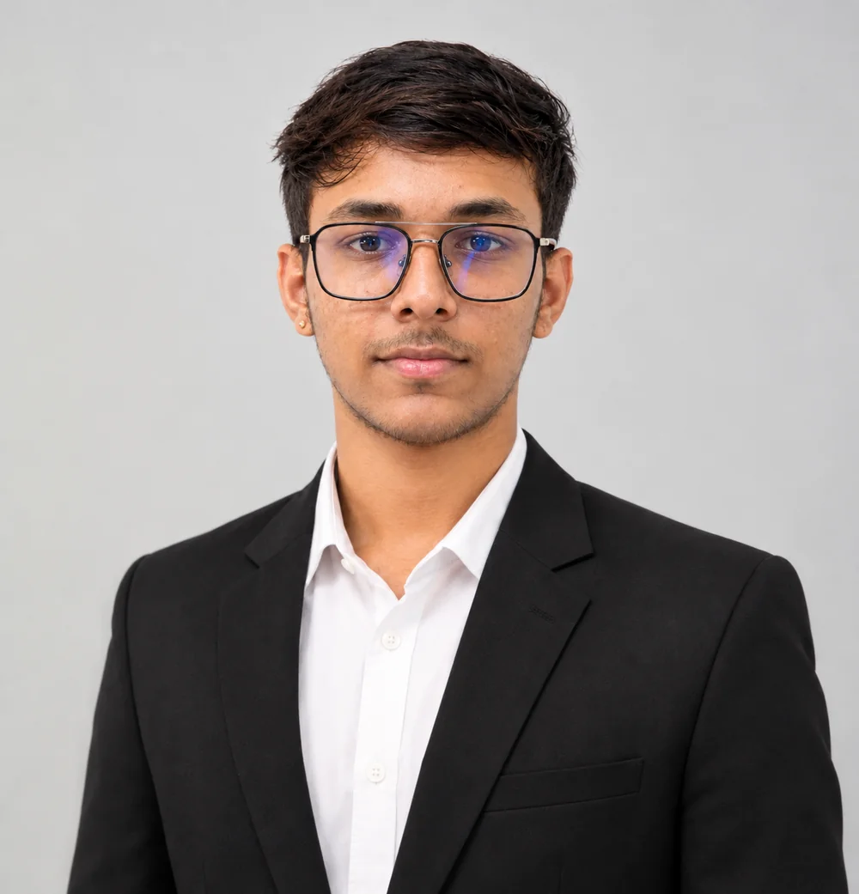

Start with a question
Get clear on what someone needs to understand or decide.
I’m Sailu, a B.Sc. Data Analytics student who likes turning messy questions into useful tools—whether that means exploring a dataset, shipping a web product, or making a tricky topic easier to learn.
B.Sc. Data Analytics · Guru Nanak College, Chennai · Class of 2028

I enjoy the space where analytical thinking meets things people can actually use.
I’m studying B.Sc. Data Analytics at Guru Nanak College in Chennai. My interests range from Python, SQL and statistics to the front end and backend pieces that turn an idea into a working product.
I enjoy using analytics to answer practical questions, then presenting the findings in a way people can act on. I also write tutorials and college-life notes at DataBytes Daily.
A practical loop I use to turn a question into something people can explore.
Get clear on what someone needs to understand or decide.
Inspect the source, clean inconsistencies, and make it ready to explore.
Use analysis and visual checks to see what the data can support.
Shape the result into a dashboard or explanation people can follow.
A practical mix of data, software and visual tools. I’m still learning, and I like it that way.
Two analytics projects exploring the signals behind restaurant performance and e-commerce growth.
Explored about 9,200 restaurant records to surface rating and price-range patterns through an interactive Streamlit dashboard.
View project on GitHub ↗How do restaurant ratings and price ranges vary across the dataset?
Clean and inspect about 9,200 records, explore patterns, then build an interactive Streamlit dashboard.
Python, Pandas, Matplotlib and Streamlit.
A Power BI dashboard focused on e-commerce sales, product performance, and key business KPIs in a stakeholder-friendly format.
Dashboard preview · Open image ↗How can sales and product performance be made easier to scan?
Organize key business KPIs and shape dashboard views for non-technical stakeholders.
Power BI and Microsoft Excel. No public project link is listed.
What I am studying now and the analytical problem I want to take on next.
Working through the VA1 and VA2 courses, building my visualization and business analytics toolkit.
Exploring inventory optimization as a project domain, with a dashboard idea on the roadmap.
Open a certificate to preview the PDF. The MongoDB collection includes five certificates.
Gold · Assessment score 86% · August 2026
View certificate ↗Guru Nanak College · December 2025
View certificate ↗Guru Nanak College · December 2025
View certificate ↗Five certificates · July 2026
View certificate 1 of 5 ↗Certificate 2 of 5
View certificate 2 ↗Certificate of participation · March 2026
View certificate ↗Guru Nanak College · Chennai
CGPA 9.2Santhome Higher Secondary School
86%I am curious about thoughtful analytics projects, useful ideas, and opportunities to keep learning.